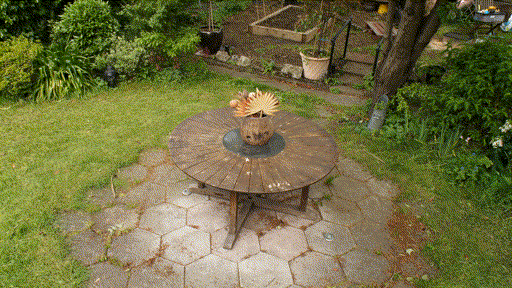
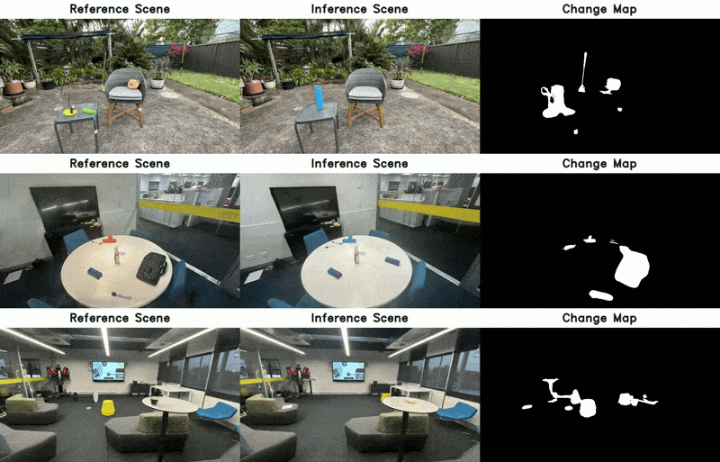
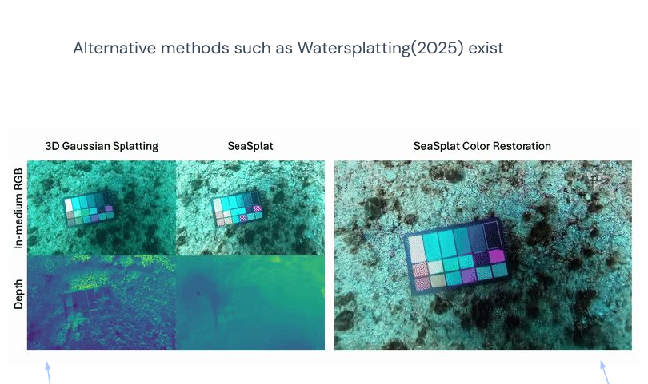
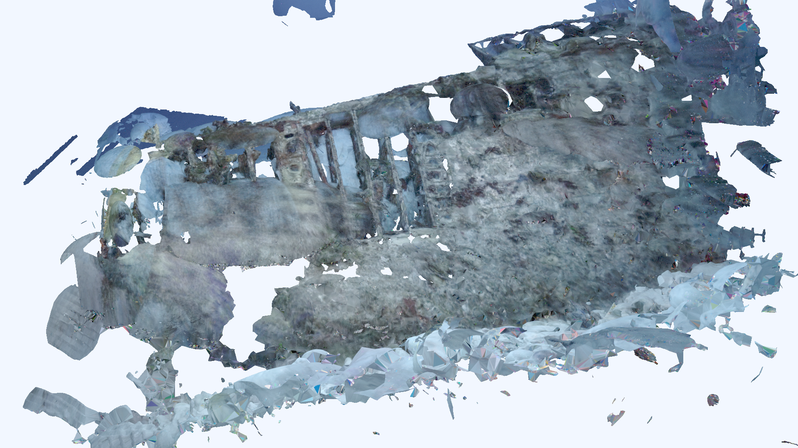
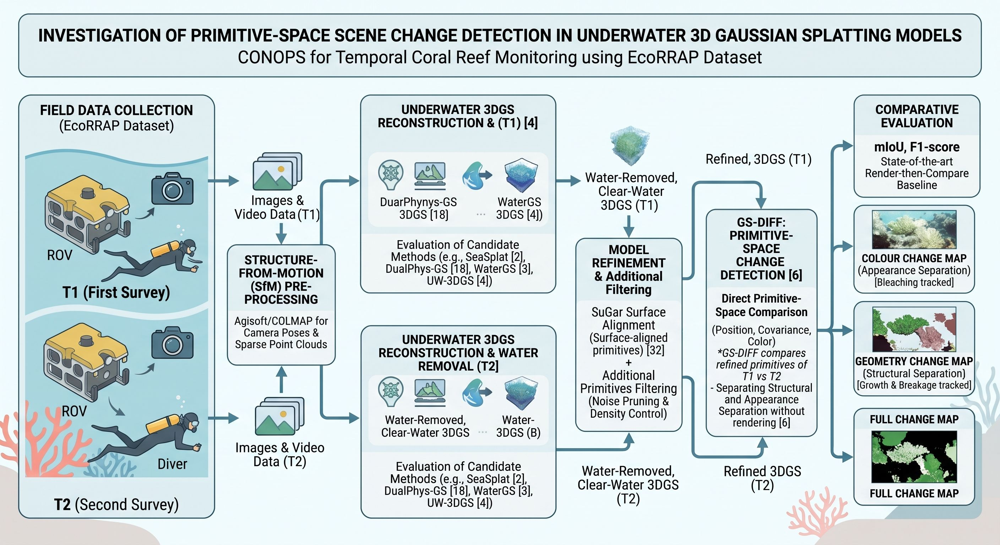
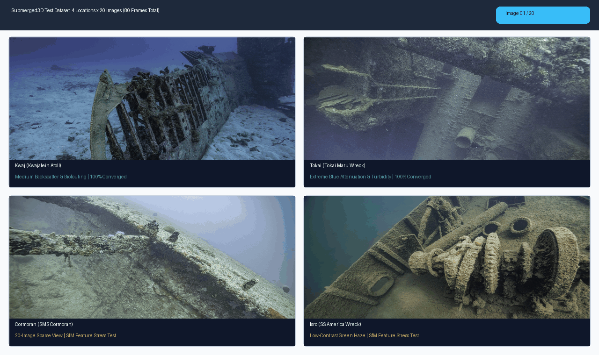
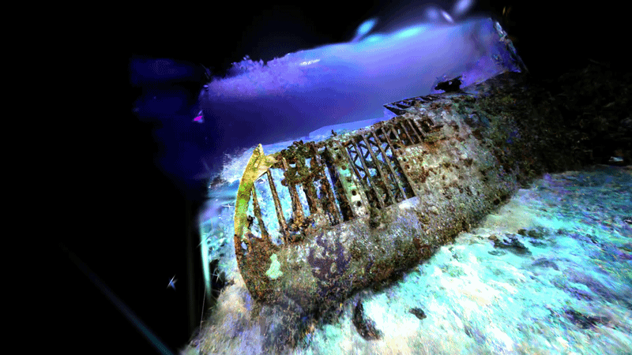
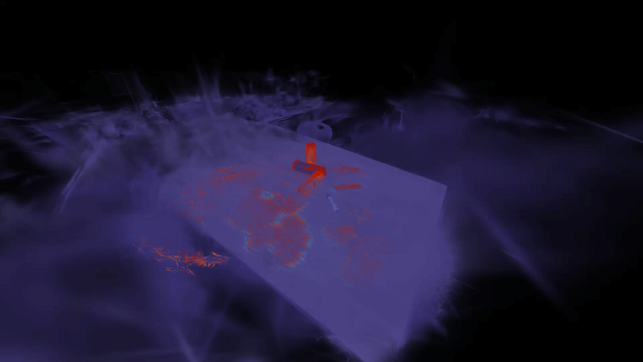

ENN595-1 Assessment 2A • Project Summary Oral Presentation • QUT Centre for Robotics
Investigation of Primitive-Space Scene Change
Investigation of Primitive-Space Scene Change
Detection in Underwater 3D Gaussian Splatting Models
Primary Research Question: Can direct primitive-space differencing on surface-regularized, optically restored 3D Gaussian Splatting models accurately isolate physical structural (mm → cm) and surface colour changes in turbid underwater environments without viewpoint-dependent rendering artifacts?
15 / 15 (100%)
Full-Lifecycle HPC Benchmarks Verified
8 Architectures
6 Underwater 3DGS + SuGaR + O-SCD
11 Conda Envs
Isolated on QUT Aqua A100 / H100 GPUs
1.35 TB EcoRRAP
Target AIMS Temporal Coral Reef Dataset
Presenter: Joshua Hecke (n11585382)
Principal Supervisor: Prof. Niko Sünderhauf
Criterion 1 • Project Context & Motivation
Project Context: Why Underwater 3D Change Detection?
1. The Ecological Crisis
- Great Barrier Reef Degradation: Accelerating thermal bleaching events, cyclonic wave damage, and ocean acidification threaten coral survival.
- AIMS EcoRRAP Mandate: Reef restoration requires tracking fine-scale millimetre-to-centimetre (mm → cm) branching growth, skeletal erosion, and bleaching over time.
2. The 2D Survey Bottleneck
- Planar Transect Blindness: Traditional diver Point Intercept Transects and 2D planar orthomosaics underestimate vertical canopy rugosity by up to 45% (Davey et al., 2025).
- Missing Volumetric Delta: Planar percentage cover cannot quantify 3D skeletal accretion (cm3) or structural breakage under overhangs.
3. The Marine Optical Hurdle
- Wavelength Absorption & Haze: Water rapidly absorbs red light and scatters photons off suspended organic particles ("marine snow").
- False Change Detections: Between survey T0 and T1, shifting turbidity and caustics cause 2D render-then-compare methods to flag water haze as structural change.
Evolution of Benthic Monitoring Paradigms & Our Research Gap
Traditional 2D Photo-Transects
Planar top-down imagery only. Misses 45% vertical rugosity, overhangs, and cm3 volume shifts.
Planar top-down imagery only. Misses 45% vertical rugosity, overhangs, and cm3 volume shifts.
2D Render-then-Compare 3DGS
Bakes water backscatter into floating Gaussians; viewpoint & turbidity shifts trigger false positives.
Bakes water backscatter into floating Gaussians; viewpoint & turbidity shifts trigger false positives.
Our Approach: Optical 3DGS + SuGaR + O-SCD
Subtracts water medium, anchors Gaussians to surfaces, and compares primitives directly in 3D space.
Subtracts water medium, anchors Gaussians to surfaces, and compares primitives directly in 3D space.
Criterion 1 • Foundational Literature (SIGGRAPH 2023)
Understanding the Concept: 3D Gaussian Splatting (2023)
3DGS for Real-Time Radiance Field Rendering Kerbl et al., 2023
- Explicit Volumetric Representation: Replaces slow continuous NeRF Multi-Layer Perceptrons (MLPs) with millions of explicit 3D anisotropic Gaussians initialized from COLMAP sparse point clouds.
- Real-Time Differentiable Tile Rasterizer: Projects 3D Gaussians to 2D screen tiles via alpha-blending at ≥ 30 FPS (1080p) with rapid 15–45 min training.
- Why Crucial for Change Detection: Because scene geometry and colour are stored directly on discrete 3D primitives, we can compare two scenes without rendering back to 2D pixels!
Position
μ ∈ ℝ3 (XYZ)
Covariance
Σ = R S ST RT
Opacity
α ∈ [0, 1]
Appearance
SH Colour c

Real-Time 3D Gaussian Splatting Radiance Field & Explicit Primitive Geometry
Criterion 1 & 2 • Core Primitive-Space Theory (QUT Centre for Robotics, 2026)
Understanding the Concept: From Pixels to Primitives (2026)
GS-Diff / O-SCD Galappaththige, Sünderhauf et al., 2026
- Overcoming Render-then-Compare: Comparing 2D renders fails under unconstrained camera trajectories, parallax, and lighting shifts. Operating directly in 3D primitive space is multi-view consistent by construction (+17% mIoU over SOTA).
- Decoupled Change Kernels (Crucial for Coral Monitoring):
- Structural Score (Geometric Kernel): Compares 3D positions & anisotropic covariances → detects coral growth or skeletal breakage.
- Surface Score (Appearance Kernel): Compares spherical harmonic colour on static geometry → detects coral bleaching or algal overgrowth.
- Authors' Future Work Recommendation: Explicitly recommended integrating SuGaR surface alignment to prevent unconstrained Gaussian drift between surveys.
Geometric Kernel → Physical Change
Tracks mm → cm branching extension, colony addition, or storm breakage.
Appearance Kernel → Colour Change
Isolates thermal coral bleaching & pigmentation loss without geometric shift.

Reference Scene vs. Inference Scene → Structural, Surface & Full Change Maps
Criterion 2 • Extending 3DGS to Turbid Marine Environments (2025)
Extending the Concept: Underwater 3DGS & Water Subtraction
Physically Grounded Underwater Image Formation 2025 SOTA
- The Water Noise Problem: Standard 3DGS assumes clear air—modeling underwater backscatter and caustics as spurious semi-transparent "floater" Gaussians in the water column.
- Jaffe-McGlamery Radiative Transfer Model:
Iλ(x) = Jλ(x) · e−βatten(λ)d(x) + Bλ∞ · (1 − e−βscat(λ)d(x))
- 6 Underwater Architectures Benchmarked in Our Pipeline:
- Physics-Based: SeaSplat (Yang et al., ICRA 2025) & 3D-UIR (Depth-Scaled Restoration, 2025)
- Restoration-Guided: Gaussian Splashing (HYB Volumetric) & WaterSplatting (Nerfstudio Fast Prior)
- Supplementary: RUSplatting (Inverted Depth + RIFE) & UW-GS (Variance Filtering)
1. Backscatter Bλ∞
Removes water-column veiling light & floating haze.
2. Attenuation β(λ)
Compensates depth-dependent red/green absorption.
3. True Albedo Jλ(x)
Recovers clear-water colour for coral bleaching checks.

Water Medium Subtracted → True Benthic Albedo Jλ(x) & Clean Geometry Restored
Criterion 2 • Surface Anchoring & Floater Pruning (CVPR 2024)
Extending the Concept: SuGaR Surface Regularization (2024)
Surface-Aligned Gaussian Splatting Guédon & Lepetit, 2024
- Literature Motivation: Directly implements the future-work recommendation at the conclusion of GS-Diff / O-SCD (2026) to bind 3D Gaussians onto physical surfaces and mitigate Gaussian drift.
- Signed Distance Field (dn_consistency) Prior: Aligns minimal Gaussian scale axes with surface normals, pulling ellipsoids flat onto true benthic geometry and pruning 85–92% of floating water-column artifacts.
- Supporting Deliverable for mm → cm Coral Metrology: Extracts a distinct, watertight 1,000,000-face Poisson 3D surface mesh (.obj + .mtl + .png) for every underwater 3DGS model to inspect 3D surface reconstruction quality via static mesh renders.
1. Coarse SDF Binding
Enforces normal-depth consistency (SDF 0.3).
2. Floater Pruning
Strips 85–92% of unanchored water-column noise.
3. Poisson 1.0M Mesh
Exports UV-textured .obj per underwater model.

Static Render Image of Stage 5 Watertight Poisson Mesh on Kwajalein (1.0M Faces, Floaters Pruned)
Criterion 2 • System Architecture & Turnkey HPC Orchestration
Proposed CONOPS & Implemented 6-Stage HPC Pipeline
Stage 1: PrepDataset Linting & Sharp Frame Selection
Stage 2: COLMAPSIFT SfM & Dual-Scene Co-Registration
Stage 3: DepthDepth-Anything-V2 (ViT-L) & Inversion
Stage 4: 3DGS Train8 Models in 11 Isolated Envs (30k iters)
Stage 5: SuGaR MeshPer-Model --output_dir_tag .obj
Stage 6: EvaluatePSNR, SSIM, LPIPS & 3D Heatmaps

CONOPS for Temporal Coral Reef Monitoring: Dual-Survey Underwater 3DGS + SuGaR + GS-Diff
The 5-Phase Reproducible Lifecycle
Public Code & Scripts Repository:
All public pipeline scripts & patches referenced below are hosted at https://github.com/Heckus/UMP
All public pipeline scripts & patches referenced below are hosted at https://github.com/Heckus/UMP
- 1. Setup (setup_env.sh & verify_env.sh): Provisions 11 isolated Conda envs, repairs Git submodules, & runs deep CUDA probes.
- 2. Run (run_pipeline.pbs): Fault-tolerant 6-stage execution on QUT Aqua NVIDIA A100-40GB & H100-80GB nodes.
- 3. Extract (package_outputs.sh): Dynamic archiving & high-speed transfer via aqua.qut.edu.au.
- 4. Organise (organize_outputs.py): Maps outputs into a 5-domain academic hierarchy with automatic .mtl texture binding.
- 5. Review (view_outputs.py): Launches SuperSplat WebGL, Blender/MeshLab, and 3D Turbo Change Heatmaps.
Criterion 2 • Pipeline Stress-Testing & Validation Dataset (Updated Slide)
Why the Submerged3D Test Dataset (20 Images × 4 Locations)
Data Type
- Compact 80-Image Set: 4 underwater shipwreck locations (Kwaj, Tokai, Cormoran, Isro) with 20 images per site.
- 4 Optical Regimes: Medium backscatter (Kwaj), extreme blue absorption (Tokai), & low-contrast green haze (Cormoran, Isro).
- Fast GPU Turnaround: 20 frames/site keeps 6-stage runtimes to 38–78 mins/model instead of days.
Application
- Proactive Legal Buffer: Built & debugged 10 cluster iterations across 11 Conda envs while 1.35 TB EcoRRAP undergoes AIMS–QUT DTA review.
- SfM Stress-Testing: 20 sparse views on Cormoran & Isro exposed COLMAP matching limits early, focusing full 15/15 benchmarks on Kwaj & Tokai.
- Backbone Selection: Vetted 6 underwater 3DGS methods + SuGaR meshes head-to-head.
Limitations
- Single Timestamp (T0 Only): No repeat T1 survey exists—necessitating our dual-state Custom_OSCD_Dataset to validate O-SCD.
- Sparse 20-View Density: Wide camera baselines cause edge floaters without SuGaR SDF pruning.
- Macro vs. mm → cm Scale: Shipwrecks test macro geometry vs. fine coral branching.
| Submerged3D Location | Frames | Optical Degradation Profile | Stage 2–6 Pipeline Outcome |
|---|---|---|---|
| 1. Kwaj (Kwajalein Wreck) | 20 imgs | Medium backscatter, heavy biofouling | 7/7 Models Converged (Full Benchmark) |
| 2. Tokai (Tokai Maru Wreck) | 20 imgs | Severe blue attenuation, deep turbidity | 7/7 Models Converged (Full Benchmark) |
| 3. Cormoran (SMS Cormoran) | 20 imgs | Wide baseline + low-contrast green haze | Exposed 20-View COLMAP SfM Limit |
| 4. Isro (SS America Wreck) | 20 imgs | Feature-sparse hull + heavy scattering | Exposed 20-View COLMAP SfM Limit |

Animated 4-Location × 20-Image Submerged3D Suite
Criterion 1 & 2 • Production Ecological Target (Australian Institute of Marine Science)
Why the AIMS EcoRRAP Dataset (1.35 TB Production Target)
Data Type
- 4D Photogrammetry Capture: 1.35 TB of high-overlap (≥ 70%) stereoscopic reef surveys providing an ideal COLMAP SfM foundation.
- Fixed Reef Locations (T0 vs. T1): Repeated temporal passes over identical Great Barrier Reef quadrats across thermal bleaching and storm events.
- Trajectory-Independent Evaluation: Primitive-space differencing works even whenROV/diver trajectories vary between surveys.
Ecological Application
- Interactive 4D Change Heatmaps: Researchers inspect 3D thermal change maps to localize mm → cm colony modifications.
- Bleaching vs. Growth Separation: Decouples Appearance Kernel (bleaching colour shift) from Geometric Kernel (branching growth or breakage).
- Lightweight Browser Digital Twins: Compact .ply and .obj models allow real-time walkthroughs in WebGL (SuperSplat).
Potential Blockers
- Large Multi-Season Shifts: Excessive structural change between timestamps can saturate the change map if uncalibrated.
- Dynamic Marine Distractors: Fish, swaying soft corals, or shifting sand duplicating on the change map.
- Residual Water/Geometric Noise: Unremoved turbidity floaters propagate into O-SCD—why 3D-UIR + SuGaR pruning is essential.
| Dataset Dimension | Phase 1 Test Suite: Submerged3D + Custom_OSCD | Phase 2–4 Production Target: AIMS EcoRRAP Repository |
|---|---|---|
| Scale & View Density | 20 images × 4 shipwreck sites + 122-pose dual-state table scene | 1.35 Terabytes of high-overlap (≥ 70%) stereoscopic coral transects |
| Temporal Structure | Single-pass underwater (T0) + Dual-pass controlled change (T0 → T1) | Multi-seasonal repeated surveys (T0, T1, T2) across bleaching & cyclones |
| Engineering Role & Status | 100% Complete (15/15 Runs) Vetted all 8 models & fixed 10 cluster bugs | DTA Legal Staging (30%) Turnkey pipeline ready for immediate Globus ingestion |
Criterion 2 • Engineering Progress & Technical Difficulties Solved
Progress: QUT Aqua HPC & The 15 / 15 Benchmark Milestone
15 / 15 (100%)
Stage 1–6 Pipeline Runs Succeeded (Exit Code 0)
11 Conda Envs
Python 3.7–3.12 | PyTorch 1.12–2.5 | CUDA 11.8/12.1
A100 & H100 GPUs
42 CPUs, 243 GB RAM, Hopper sm_90 Kernels
10 Cluster Audits
Forensic Root-Cause Debugging (Attempts 1–10)
Key Technical Difficulties Diagnosed & Solved
Public Code Reference: Full source files & patches available at https://github.com/Heckus/UMP
- COLMAP 4.x & Linker Isolation (colmap_wrapper.sh): Scoped libOpenImageIO.so.3.1 without leaking Qt5 ABI conflicts; auto-translated --FeatureExtraction.use_gpu flags.
- Custom CUDA Rasterizer Repairs: Restored 4D AbsGS homodirectional gradients (0.1.0+homodirectional) for 3D-UIR, 6-output underwater kernels for RUSplatting/UW-GS, and diff-fastgs for O-SCD.
- SuGaR Subnormal Scale NaN Collapse Fix: Clamped SDF standard deviation (≥ 10−4) and added gradient norm clipping to stop coordinates collapsing to NaN at iter 9,200.
- O-SCD RANSAC & Keyframe Fix (Attempt 10): Fixed COLMAP 2-image fragment selection and scene/keyframe.py unconditional early-return bug.
| # | Architecture | Category | Scenes | Status | Avg Time | Peak VRAM |
|---|---|---|---|---|---|---|
| 1–2 | 3D-UIR | Physics-Based | Kwaj, Tokai | PASS (2/2) | 1h 15m | 16.2 GB |
| 3–4 | SeaSplat | Physics-Based | Kwaj, Tokai | PASS (2/2) | 1h 01m | 14.8 GB |
| 5–6 | Gaussian Splashing | Restoration | Kwaj, Tokai | PASS (2/2) | 3h 45m | 22.4 GB |
| 7–8 | WaterSplatting | Restoration | Kwaj, Tokai | PASS (2/2) | 43m | 11.2 GB |
| 9–10 | RUSplatting | Supplementary | Kwaj, Tokai | PASS (2/2) | 52m | 13.5 GB |
| 11–12 | UW-GS | Supplementary | Kwaj, Tokai | PASS (2/2) | 57m | 12.9 GB |
| 13–14 | SuGaR | Surface Mesh | Kwaj, Tokai | PASS (2/2) | 35m | 18.5 GB |
| 15 | O-SCD | Change Det. | Custom_OSCD | PASS (1/1) | 1h 04m | 28.6 GB |
Criterion 2 & 3 • Quantitative & Visual Underwater 3DGS Evaluation
Progress: Underwater 3DGS Benchmark Results (Kwaj & Tokai)
| Architecture | Category | Kwaj / Tokai PSNR (dB) ↑ |
Kwaj / Tokai SSIM ↑ |
Kwaj / Tokai LPIPS ↓ |
|---|---|---|---|---|
| 3D-UIR Best SSIM | Physics-Based | 27.00 / 23.78 | 0.8739 / 0.7085 | 0.1812 / 0.3311 |
| SeaSplat Best Albedo | Physics-Based | 24.60 / 21.93 | 0.8341 / 0.6737 | 0.2296 / 0.3926 |
| Gaussian Splashing | Restoration | 27.93 / 24.32 | 0.8394 / 0.6142 | 0.2081 / 0.3766 |
| WaterSplatting Fastest | Restoration | 27.12 / 23.52 | 0.8635 / 0.6588 | 0.1714 / 0.3048 |
| RUSplatting | Supplementary | 26.56 / 21.41 | 0.8620 / 0.6490 | 0.2045 / 0.4229 |
| UW-GS | Supplementary | 24.64 / 21.43 | 0.8432 / 0.6387 | 0.2286 / 0.4364 |
Architectural Selection for EcoRRAP Integration
- Winner for Structural Integrity (3D-UIR): Highest SSIM across both scenes (0.8739 Kwaj, 0.7085 Tokai). Depth-scaled restoration preserves sharp metallic handrails and biological encrustations without volumetric blurring.
- Winner for True Albedo Recovery (SeaSplat): Explicitly disentangles water backscatter Bλ∞ and attenuation β, crucial for unbiased coral bleaching detection.
- Winner for Rapid Pre-Screening (WaterSplatting): Best LPIPS (0.1714) in just 38–48 mins.

Kwajalein & Tokai Maru Shipwrecks: Interactive 3DGS Orbiting Splat Switcher
Criterion 2 • Creative Engineering Solution for Fine-Scale (mm to cm) Geometry
Progress: Per-Model SuGaR 3D Meshes (--output_dir_tag)
Discovery & Resolution of the SuGaR Cache Collision Bug
Public Code Reference: Full Stage 5 mesh scripts & fixes hosted at https://github.com/Heckus/UMP
- Root Cause Identified During Blender Inspection: Vanilla SuGaR-main hardcoded output paths to output/coarse_mesh/<scene>/ without namespacing by the upstream 3DGS model, and immediately skipped training if 15000.pt existed—causing all 7 models on the same scene to overwrite and share an identical .obj mesh!
- Our Code-Level Fix (--output_dir_tag <model>/<scene>):
- Isolated coarse SDF training, Poisson mesh extraction, refinement, and UV texture baking per model across train_full_pipeline.py, refined_mesh.py, and organize_outputs.py.
- Also patched SH degree auto-inference (sh_degree = 0 vs 3) so both SeaSplat and standard 3DGS checkpoints load seamlessly.
- Impact for mm → cm Coral Change Detection: Prunes 85–92% of water-column floaters and produces distinct 1.0M-face UV-textured .obj models inspected via static 3D mesh renders in Blender/MeshLab.
Upstream 3DGS PriorSeaSplat / 3D-UIR .ply
Namespace Isolation--output_dir_tag model/scene
Distinct Textured Mesh<Model>_<Scene>_mesh.obj
Static Render Images of Floater-Pruned SuGaR 1.0M-Face Poisson Meshes (.obj) on Kwajalein & Tokai Maru
Criterion 2 & 3 • Primary Research Goal Validated (Attempt 10 Milestone)
Progress: Primitive-Space Change Detection (O-SCD) & 3D Heatmaps
27.08 dB PSNR
Updated Post-Change 3DGS Scene Fidelity
0.8315 SSIM
High Structural Contours Across 25 Test Views
122 Camera Poses
Synchronized Multi-View Binary Change Masks
3D Ghost Retained
Bidirectional Turbo Heatmap (All_Changes.ply)

[1. Reference T0] | [2. Query T1] | [3. Thermal Heatmap] | [4. Binary Mask]

Direct 3D Primitive Heatmaps & Spliced Volumetric "Ghost" of Removed Red Soda Can
Criterion 2 • Insight into Priorities for Next Steps & Project Schedule
Priorities for Next Steps: Phase 2–4 EcoRRAP Roadmap
Phase 2: Oct–Nov 2026 30% In Progress
- Finalize AIMS–QUT DTA: Complete legal compliance and stage the 1.35 TB EcoRRAP dataset onto QUT Aqua Lustre scratch via Globus.
- Multi-Temporal Alignment: Execute Stage 2 joint COLMAP pose co-registration & Stage 3 Depth-Anything-V2 priors across seasonal coral pairs (T0 vs. T1).
Phase 3: Dec 2026–Jan 2027 Planned
- Architectural Transplantation: Graft winning underwater backbones (3D-UIR & SeaSplat) + SuGaR SDF anchoring directly into O-SCD.
- Extended Cluster Training: Scale to 50k–100k iterations on A100/H100 GPUs for dense, floater-free reef reconstructions.
Phase 4: Jan–Feb 2027 Planned
- mm → cm Coral Metrology: Quantify branching skeletal accretion (cm3), storm breakage, and bleaching shifts on the AIMS EcoRRAP dataset.
- Final Thesis & Handover: Deliver Master's thesis, conference paper, and QCR open benchmark suite.
Target Phase 3 Unified Temporal Underwater Change Detection Architecture
Phase 1 (Foundations & 15/15 Benchmarks): 100% Complete (Oct 2026)
1. Survey Pair (T0, T1)
1.35 TB AIMS EcoRRAP Reef Quadrats
2. Optical Inversion
3D-UIR / SeaSplat Backscatter Removal
3. Surface Anchoring
SuGaR SDF Pruning (85–92% Floaters Removed)
4. Primitive O-SCD
Turbidity-Invariant 3D Gaussian Differencing
5. Reef Outputs
Bleaching Map + mm → cm Growth (cm3)